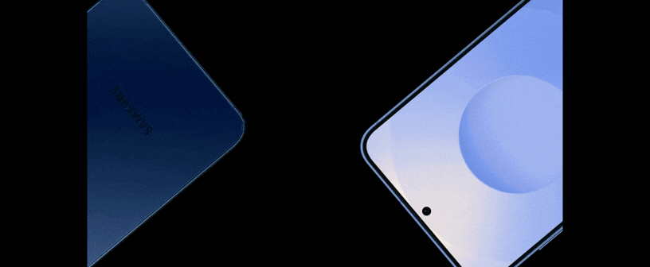

EXPLORACIONES

CONTACTO
SOBRE MI

Comercial promocional para Samsung Galaxy S25, desarrollado para comunicar de forma dinámica el lanzamiento del dispositivo. La pieza combina motion graphics, secuencias del producto y escenas de uso cotidiano para destacar su diseño y crear una experiencia visual atractiva para plataformas digitales.
PROCESO CREATIVO
Acerca del proyecto
El objetivo del proyecto fue desarrollar un comercial breve y de alto impacto visual que presentara el Samsung Galaxy S25 de forma moderna y atractiva. A través de una edición dinámica, gráficos en movimiento y una estética minimalista, la pieza busca captar la atención desde los primeros segundos y comunicar el lanzamiento del dispositivo de manera clara y contemporánea.
Reto del proyecto
El principal reto consistió en condensar la información del producto en un formato corto sin perder claridad ni atractivo visual. Fue necesario equilibrar el protagonismo del dispositivo con recursos gráficos y un ritmo de edición que mantuvieran el interés del espectador y reforzaran una estética tecnológica acorde con la identidad de la marca.
ROLE
articipé en la conceptualización y producción audiovisual del comercial, desarrollando el storyboard para definir la narrativa visual y la secuencia de las escenas. Posteriormente, realicé la edición y postproducción de la pieza utilizando Adobe Premiere Pro, Adobe After Effects y Adobe Photoshop.
Me encargué de la creación y animación de los motion graphics, así como del desarrollo de un modelo visual del Samsung Galaxy S25 con apariencia tridimensional mediante composiciones y técnicas de animación en After Effects. También integré elementos gráficos, transiciones y efectos visuales para mantener un ritmo dinámico, reforzar la identidad tecnológica del comercial y comunicar las características del producto de manera clara y atractiva.
COMPAÑÍA
SAMSUNG
Storyboard
Timeline
Mini render